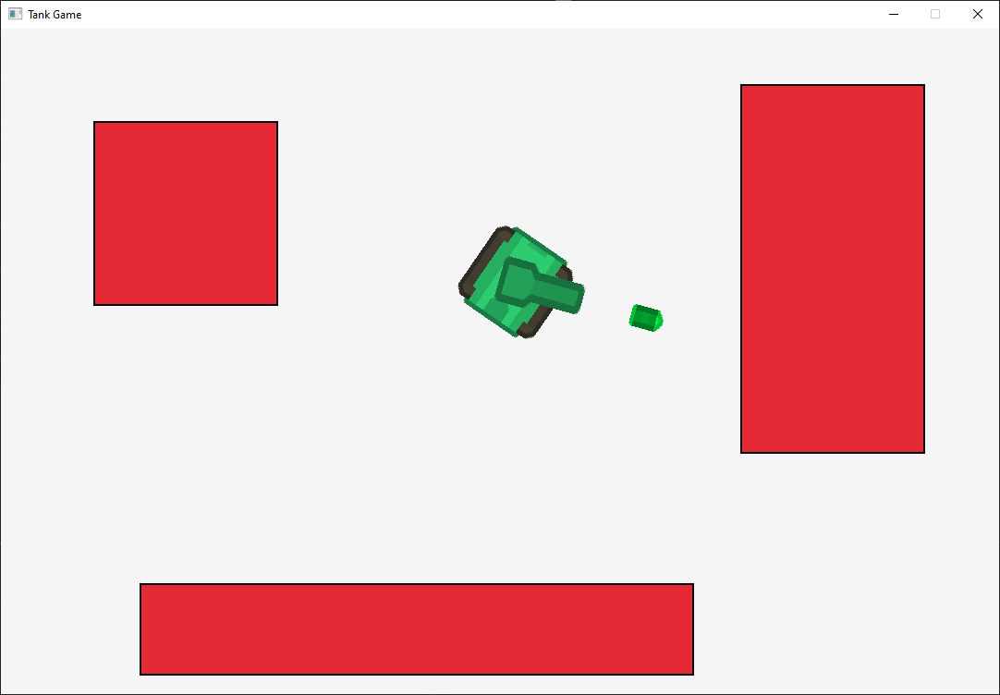

I developed a 3D Tetris game as my first project. The game brings a fresh perspective to the classic Tetris gameplay by adding a 3D environment. Built using unity and c#, the project highlights my skills in collision detection, saving and loading game data, and game mechanics.

For this project, I implemented key mathematical concepts essential for 2D and 3D game development, including vectors, matrices, and collision detection techniques. Using RayLib and Cpp, I wrote code that handles vector and matrix manipulation and built unit tests to ensure accurate output. Additionally, I explored basic binary operations and implemented collision detection algorithms to determine object interactions. This project demonstrates my understanding of game math and coding, crucial for game development.